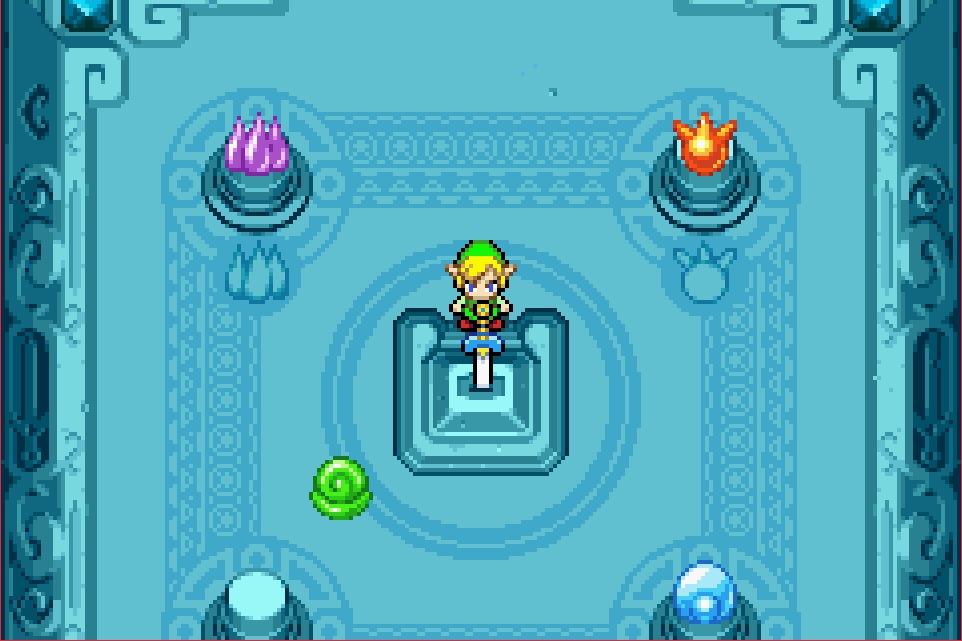
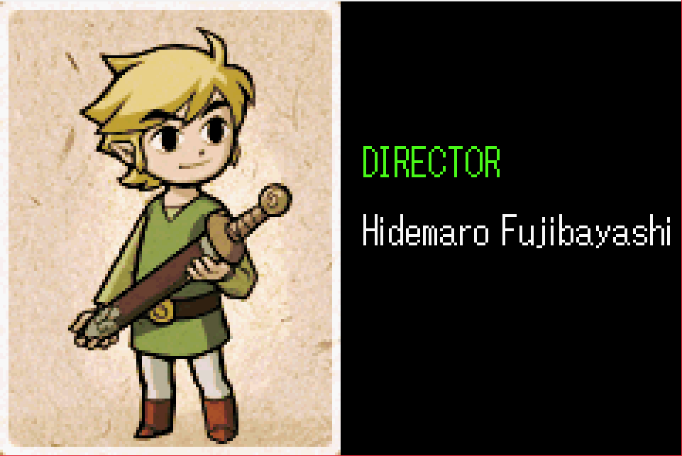
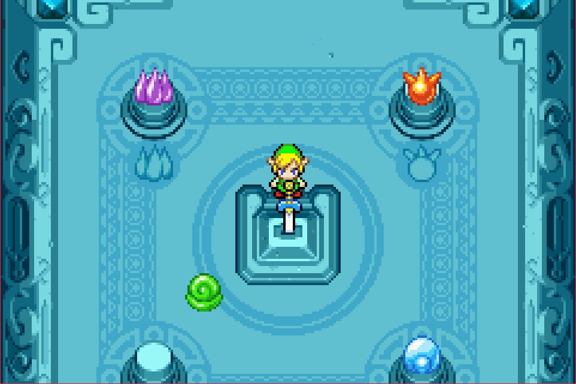
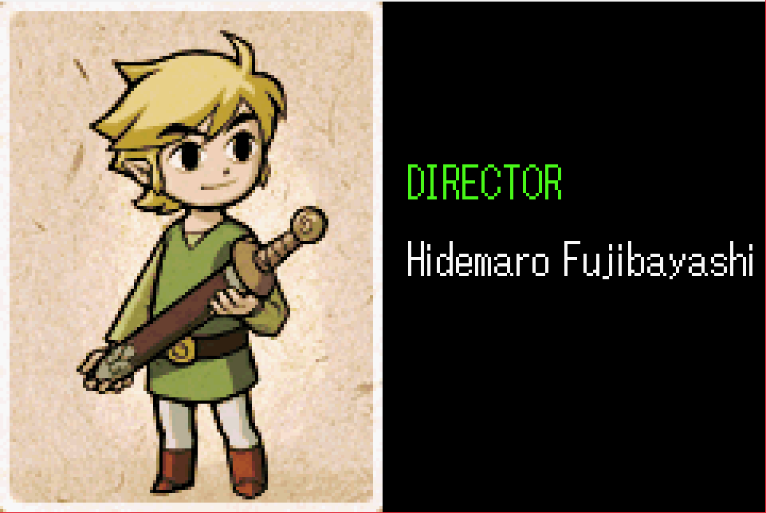

Complete on 2017-05-27
Complete on 2017-05-27
4 / 5
Release Date: Jan 10, 2005
Meta Score: 89
Complete on 2017-05-27
4 / 5
Release Date: Jan 10, 2005
Meta Score: 89
 



Minish Cap is a pretty great game in the 2D Zelda tradition. I actually prefer the 2D Zelda games over the 3D Ocarina of Time and descendants. The game has excellent graphics and music, and mostly strong gameplay. I have played Minish Cap before, at least twice as far as I remember.
The story is fairly typical Zelda fare, although it does a few things differently. Zelda's been turned to stone rather than kidnapped, (spoilers) the bad guy isn't Gannon in disguise, there's no explicit triforce (although there is a "Light force" which is probably the same thing) and no master sword.
The main thrust of the quest is that you're looking for the 4 elements, which you need to reforge The Four Sword, an ancient magical sword that can defeat evil and restore the princess to life. In the process you discover that the legendary race of tiny elves called "Picori", who call themselves "Minish", are real and gain the ability to shrink down to their world using a magical talking hat who accompanies Link on his journey.
I like the shrinking mechanic. It adds a real sense of wonder to the game. Figuring out how to access particular areas in town in Minish form is fun, as the town becomes quite mazelike when you're tiny. Traversal can be a little slow though, especially when you have to retrace your steps back out to whatever object changes your size. It's also reasonably well integrated with the world and some of the dungeons, rather than feeling like a compete gimmick.
The game has a couple of items that are just really fun to use. Digging with the mole mitts is oddly satisfying. The game's version of Roc's Cape (allowing Link to jump) is also really fun to bounce around with, although it interacts a little oddly with cliffs and bottomless pits. The Four Sword is tragically underused, and is pretty much only used for "press multiple buttons at once" and "push heavier blocks". It's a shame they don't allow you to use any item except the sword while split, as that would have opened up some interesting puzzles.
However, the game is flawed.
* The game is relatively short, having only 5 main dungeons + the final castle (compared to 11 for Link To The Past, also on GBA). The world also ends up feeling a little small and pokey.
* One thing I hadn't remembered is that Ezlo, the sentient hat who accompanies Link, is actually fairly annoying. Not the worst offender in the Zelda series, but he does like to break in with obvious comments.
* The control scheme also doesn't make great use of the buttons available. The L button is exclusively for fusing kinstones, and Select is dedicated to asking for useless hints from Ezlo. Meanwhile there's no quick way to get to the map or use more than 2 items at a time.
* The disconnected/non-local nature of kinstone fusion can be annoying. Sometimes if you're stuck trying to do something in the overworld, the solution is actually to go away and fuse kinstones with some random NPC to add something to the environment.
*The game is also pretty easy. I only came close to dying once (but had a bottled fairy, so not even then). I'd normally expect to die a few times in the course of a Zelda game. None of the puzzles struck me as particularly taxing either. I got stuck only twice, and that was due to the game not communicating what I was supposed to be doing between dungeons (and even in this case Ezlo was no help at all).
* It has a shitty stealth minigame you have to play twice. I hate those.
* It reuses the same miniboss fight way too much. 6 times, only varying in numbers and colours, in the final dungeon, plus a few before that.
It makes up for the short length a little by having fairly extensive side quests and optional content. The kinstone fusion mechanic adds a lot of fun to exploring and retreading areas. There are also quite a few optional pieces of equipment to find, as well as optional sword skills and some other fun things. There are a ton of heart containers too (because there are so few bosses but the game is still going up to a 20 heart maximum). There's a figurine collection mechanic, which uses a separate currency (shells) to play a gashapon machine. There's no real reward for finishing it though, and the interface to play the machine is very slow and clunky. I wasn't a fan.
All in all, a strong game to start with.